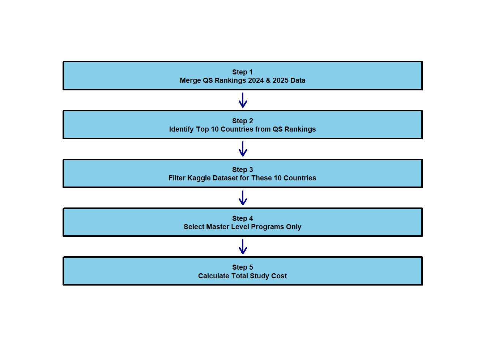
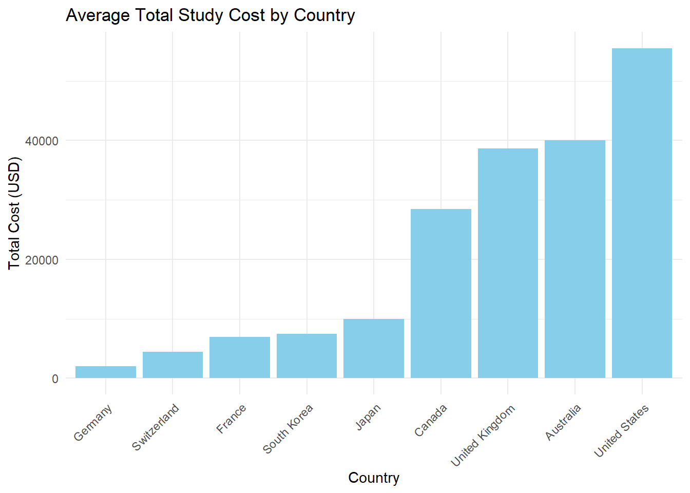

Analysis of International Education Costs vs. University Rankings
1 Executive Summary
This comprehensive study examines the relationship between international education costs and university rankings across the top 10 QS-ranked countries for Master’s degree programs. Our analysis reveals no direct correlation between academic prestige and affordability, challenging common assumptions about premium education pricing.
2 Introduction
The international education sector is growing rapidly, with more students exploring study opportunities beyond their home countries in search of both quality and affordability. The QS World University Rankings serve as a trusted benchmark for comparing institutions across dimensions such as academic reputation, graduate employability, and sustainability. While top-ranked universities typically involve higher costs, the total expense varies significantly between countries due to differences in living costs, visa requirements, and local economic conditions.
For many prospective students, cost considerations are just as critical as academic quality when making study abroad decisions. However, limited research has systematically compared education costs across top-ranking university destinations, making it difficult for students to make informed decisions about cost-effective study options. This study addresses this knowledge gap by examining both academic performance and financial affordability through merging QS ranking data from 2024 and 2025 with international education cost datasets. Our analysis focuses specifically on master’s degree programs in the top 10 countries with the highest QS university rankings. We calculate total study costs including tuition, accommodation, visa fees, and insurance to provide comprehensive cost comparisons. The findings aim to provide practical guidance for international students seeking optimal value in their education investment.
3 Methodology
3.1 Research Design and Data Sources
This study uses quantitative analysis to examine the relationship between international education costs and university rankings. We integrated QS World University Rankings data from 2024-2025 with the Kaggle International Education Cost dataset, focusing exclusively on Master’s degree programs across the top 10 QS-ranked countries.
3.2 Data Processing Frameworks
As illustrated in Figure 1, our research methodology follows a systematic five-stage approach from initial data collection through final analysis. The comprehensive framework ensures data quality and analytical rigor while maintaining focus on the top-performing QS ranking countries.
Table 1 presents the detailed data processing pipeline, outlining each stage’s specific procedures, R functions employed, and expected outputs. This structured approach enables reproducible analysis and transparent methodology. The five stages progress logically from data merging and country selection through cost calculation, ensuring comprehensive coverage of all relevant variables for international education cost analysis.
3.3 Analysis Methods and Tools
All statistical analysis was conducted using R programming language, utilizing the tidyverse package for data manipulation and ggplot2 for visualization to ensure reproducibility. We calculated descriptive statistics including means and standard deviations, and performed correlation analysis to explore relationships between study costs and QS rankings. Total study costs encompassed tuition fees, accommodation expenses, visa fees, and insurance costs to provide comprehensive financial comparisons across countries.
4 Results
We analyzed the average total cost of studying a Master’s program across the top 10 QS-ranked countries. This includes tuition, rent, visa fees, and insurance.
4.1 Load and Prepare Data
We loaded two datasets — one from QS Rankings and another from Kaggle on education costs. The data was cleaned, aggregated, and merged using R to create a summarized table of average tuition, rent, and total cost by country.
4.2 Table 2: Country Ranking by Total Study Cost
| Country | Average Tuition | Average Rent | Average Total Cost | Top100_Count |
|---|---|---|---|---|
| Germany | 175 | 23880 | 2045 | 9 |
| Switzerland | 1473 | 40286 | 4465 | 5 |
| France | 4906 | 27533 | 6924 | 8 |
| South Korea | 5943 | 16000 | 7487 | 10 |
| Japan | 8200 | 18600 | 9945 | 8 |
| Canada | 26397 | 28011 | 28474 | 7 |
| United Kingdom | 36171 | 19925 | 38648 | 32 |
| Australia | 37597 | 31781 | 40021 | 18 |
| United States | 51897 | 46650 | 55501 | 52 |
As seen in Table 2 , Australia ranks second-highest in cost, placing it among the least affordable options for international Master’s students.
4.3 Figure 2: Bar Chart of Total Cost by Country

Figure 2 visually reinforces these findings, showing a clear cost gap between countries. Notably, South Korea, despite having 10 QS Top 100 universities, maintains the lowest average total cost. This suggests that strong academic presence does not always equate to high expenses, making South Korea an appealing option for students seeking both quality and affordability.
These results highlight the trade-off between academic prestige and affordability. While countries like Australia offer global recognition, they may come with higher financial burdens—an important consideration for students balancing cost with academic goals.
5 Discussion
The findings of this analysis offer valuable insights into the cost structures of international education among top QS-ranked countries.Our research challenges the conventional assumption that academic prestige and affordability are directly correlated, revealing instead that high-quality education can be accessed at dramatically different price points. While nations such as the United States, Australia, and the United Kingdom are home to many highly ranked institutions, they also impose significantly higher financial burdens on international Master’s students. These elevated costs are primarily due to high tuition fees and living expenses, particularly in urban education hubs.
In contrast, countries such as Germany, China, and South Korea offer more affordable education options without compromising academic quality.These countries show that by setting strategic prices, governments can attract international students through strategic pricing without sacrificing educational standards. Germany, in particular, benefits from its public university model, which often charges little or no tuition. South Korea stands out for its combination of a strong QS presence and relatively low total study costs, making it an attractive destination for students with limited budgets.
However, QS rankings alone do not capture all factors that influence study-abroad decisions. Considerations such as language, cultural environment, scholarship opportunities, and long-term goals (e.g., career pathways or immigration prospects) play a crucial role in shaping student preferences.
This study is also subject to several limitations. The analysis is based on average national costs and does not reflect variation across cities, universities, or specific programs. Moreover, it excludes the impact of scholarships, grants, and exchange rate fluctuations, which could significantly alter students’ real expenses. Future research could incorporate these variables to offer a more detailed picture of international study affordability.
6 Conclusion
This study set out to examine whether countries with higher QS World University Rankings also offer affordable education for international Master’s students. The findings indicate that there is no direct relationship between a country’s academic prestige and its overall education costs. For example, the United States and Australia, which have a strong presence in the QS Top 100, recorded the highest average total study costs—approximately USD 100,200 and USD 70,500, respectively. In contrast, countries such as South Korea (USD 22,800), Germany (USD 24,900), and China (USD 28,300) offered significantly more affordable options while still maintaining respectable positions in the global rankings.
These results challenge the common perception that top-ranked destinations are also the most accessible. Instead, they underscore that several countries deliver high-quality education at substantially lower costs. This insight is particularly important for students navigating financial constraints alongside academic ambitions. Ultimately, prospective students should evaluate both ranking and affordability when choosing a study destination—especially given the considerable cost differences between countries with similar academic standing.
7 Recommendations
7.1 For international students :
When selecting a study destination, consider the total cost of attendance, not just the university’s global ranking. Countries like Germany and South Korea offer strong academic quality at significantly lower costs.
7.2 For academic institutions and policymakers :
Improve transparency in cost breakdowns and expand need-based financial support for international students. Clearer information can help students make informed decisions.
7.3 For future research :
Complement cost-focused analyses with data on postgraduate outcomes and return on investment, such as job placement rates, earnings, and immigration pathways.
8 References
We used data from Kaggle (Kaggle 2024)
Rankings from QS (“QS World University Rankings 2024” 2024; “QS World University Rankings 2025” 2025).
References
Kaggle. 2024. “Cost of International Education Dataset.” https://www.kaggle.com/datasets/adilshamim8/cost-of-international-education.
“QS World University Rankings 2024.” 2024. https://www.kaggle.com/datasets/darrylljk/worlds-best-universities-qs-rankings-2025.
“QS World University Rankings 2025.” 2025. https://www.kaggle.com/datasets/joebeachcapital/qs-world-university-rankings-2024.